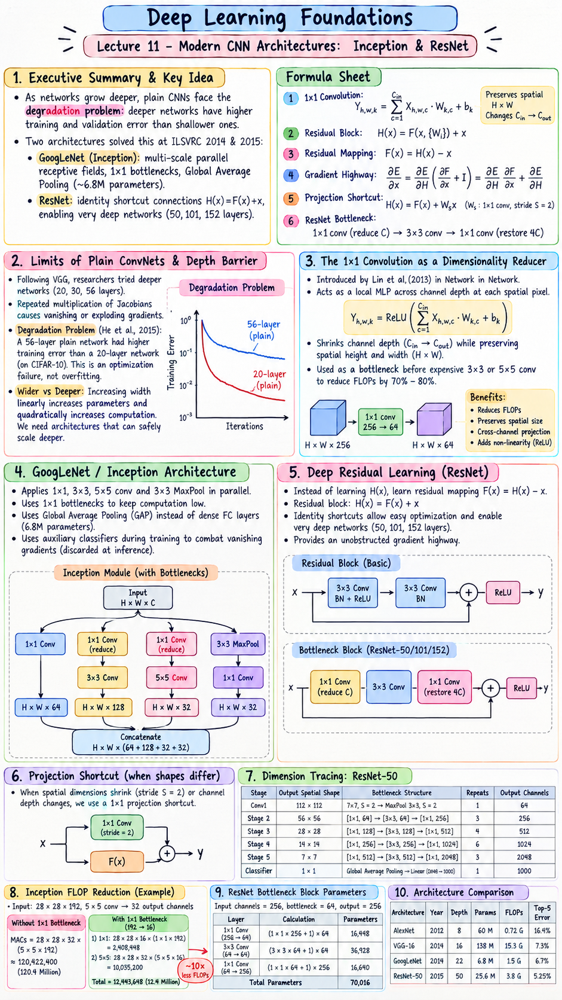

Executive Summary & Formula Sheet
Core Concept: As neural networks grow deeper, plain sequential stacking hits a fundamental optimization barrier known as the degradation problem: deeper plain networks paradoxically exhibit higher training and validation errors than shallower counterparts. Two revolutionary architectures resolved this dilemma at ILSVRC 2014 and 2015. GoogLeNet (Inception) introduced multi-scale parallel receptive fields and used \(1 \times 1\) bottleneck convolutions to dramatically cut FLOPs while replacing dense FC layers with Global Average Pooling (~6.8M parameters). ResNet introduced identity shortcut connections (\(\mathcal{H}(x) = \mathcal{F}(x) + x\)), converting layers into residual estimators and creating unobstructed gradient highways that enabled training networks of unprecedented depth (50, 101, and 152 layers).
- 1x1 Convolution Operation: $$\mathbf{Y}_{h,w,k} = \sum_{c=1}^{C_{\text{in}}} \mathbf{X}_{h,w,c} \cdot \mathbf{W}_{k,c} + b_k \quad (\text{preserves spatial } H \times W, \text{ changes } C_{\text{in}} \to C_{\text{out}})$$
- Residual Block Formulation: $$\mathcal{H}(x) = \mathcal{F}(x, \{W_i\}) + x$$
- Residual Mapping (What is learned): $$\mathcal{F}(x) = \mathcal{H}(x) - x$$
- Gradient Highway (Backpropagation): $$\frac{\partial \mathcal{E}}{\partial x} = \frac{\partial \mathcal{E}}{\partial \mathcal{H}} \left( \frac{\partial \mathcal{F}}{\partial x} + \mathbf{I} \right) = \frac{\partial \mathcal{E}}{\partial \mathcal{H}} \frac{\partial \mathcal{F}}{\partial x} + \frac{\partial \mathcal{E}}{\partial \mathcal{H}}$$
- Projection Shortcut (when shapes differ): $$\mathcal{H}(x) = \mathcal{F}(x) + W_s x \quad (\text{where } W_s \text{ is a } 1\times 1 \text{ conv with stride } S=2)$$
- ResNet Bottleneck Structure: $$1\times 1 \text{ conv (reduce } C\text{)} \to 3\times 3 \text{ conv} \to 1\times 1 \text{ conv (restore } 4C\text{)}$$
Lecture 11 Visual Cheatsheet

Click image to open high-resolution version in new tab
1. Limits of Plain ConvNets & The Depth Barrier
1.1 Vanishing Gradients in Deep Pipelines
Following VGG's success, researchers attempted to stack more layers (e.g. 20, 30, 56 layers). However, repeated multiplication of weight Jacobians during backpropagation caused gradients to either decay exponentially toward zero (vanishing gradient) or explode to infinity.
1.2 The Degradation Problem (Optimization Failure)
Even with Batch Normalization ensuring well-scaled activations, extremely deep plain networks hit a strange and devastating roadblock: the degradation problem.
When comparing a 56-layer plain network against a 20-layer plain network on CIFAR-10, the 56-layer network had higher training error throughout all epochs! This was NOT overfitting (in overfitting, training error is near zero while validation error spikes). It was an optimization failure: stochastic gradient descent cannot optimize deep non-linear stacks to learn even a simple identity mapping!
1.3 The Trade-off: Wider vs Deeper
Making networks wider (more channels) linearly increases parameter count and quadrately increases computational cost. To improve representation power efficiently, the vision community needed architectures that could safely scale deeper without gradient collapse.
2. The 1x1 Convolution as a Dimensionality Reducer
2.1 Cross-Channel Linear Projection
Introduced by Lin et al. in "Network In Network" (2013), a \(1 \times 1\) Convolution operates on a single spatial pixel \((h, w)\) across all input channels \(C_{\text{in}}\). It acts as a localized Multi-Layer Perceptron across the channel depth, computing a linear combination of all channels followed by a non-linear activation (ReLU):
2.2 Channel Pooling Without Spatial Distortion
While spatial pooling (MaxPool) shrinks spatial height and width while preserving channel depth, a \(1 \times 1\) convolution does the exact opposite: it shrinks channel depth (\(C_{\text{in}} \to C_{\text{out}}\)) while preserving exact spatial height and width!
2.3 Dramatic Computational FLOPs Reduction
By placing a \(1 \times 1\) convolution before an expensive \(3 \times 3\) or \(5 \times 5\) convolution (a bottleneck projection), we compress the channel count (e.g. from 256 down to 64), perform the spatial convolution cheaply, and then project channels back up. This reduces FLOPs by up to 70% to 80% with zero loss in representational capacity.
3. GoogLeNet / Inception Architecture
3.1 Multi-Scale Processing in Parallel
In standard CNNs (AlexNet, VGG), the designer must choose a fixed kernel size for each layer: should it be \(1 \times 1\), \(3 \times 3\), or \(5 \times 5\)? Different images require different receptive fields to capture small vs large objects.
The Inception module avoids this guesswork: it applies \(1 \times 1\), \(3 \times 3\), \(5 \times 5\) convolutions and \(3 \times 3\) Max Pooling simultaneously in parallel at the exact same level, concatenating their output feature maps along the channel dimension!
3.2 The Inception Module with Bottlenecks
A naive multi-scale module is computationally prohibitive because channel depths blow up after concatenation. GoogLeNet introduces bottleneck \(1 \times 1\) convolutions before the \(3 \times 3\) and \(5 \times 5\) branches and after the MaxPool branch. This makes deep multi-scale processing computationally feasible.
3.3 Global Average Pooling & Auxiliary Classifiers
- Global Average Pooling (GAP): Replaced the massive FC layers of AlexNet/VGG with a single GAP layer that averages each feature map into a single scalar value. This slashed total network parameters from 138M (VGG) to just 6.8 Million (20x parameter reduction!).
- Auxiliary Classification Heads: Attached two intermediate softmax loss branches to middle layers during training. These auxiliary heads injected fresh gradients directly into early layers, combating vanishing gradients in a 22-layer pipeline (discarded at inference).
4. Deep Residual Learning (ResNet)
4.1 Reformulation: Learning Residuals F(x) = H(x) - x
In a plain network, stacked layers are tasked with learning the full target mapping \(\mathcal{H}(x)\). If an identity mapping is optimal (i.e. adding more layers should at least perform no worse than a shallower network), plain layers struggle to fit weights to approximate \(\mathcal{H}(x) = x\).
Kaiming He et al. (2015) reformulated the objective: instead of fitting \(\mathcal{H}(x)\), let the stacked non-linear layers fit a residual mapping:
If identity mapping is required, the optimizer simply pushes the weights of \(\mathcal{F}(x)\) toward zero, which is trivial with standard L2 regularisation!
4.2 The Residual Skip Connection: H(x) = F(x) + x
A residual block connects the input \(x\) directly to the output via an identity shortcut connection, performing an element-wise addition before applying the final ReLU activation:
Identity shortcuts introduce zero extra parameters and zero computational overhead beyond simple element-wise addition.
4.3 Gradient Highway: Resolving Vanishing Gradients
Let's inspect the gradient of loss \(\mathcal{E}\) with respect to input \(x\) through a residual block:
Notice the term \(+\frac{\partial \mathcal{E}}{\partial y}\)! Even if the weight pathway \(\frac{\partial \mathcal{F}}{\partial x}\) decays to zero, the clean gradient \(\frac{\partial \mathcal{E}}{\partial y}\) flows backwards directly through the identity shortcut unchanged! The shortcut acts as an uninterrupted gradient highway, enabling stable training of networks with 100 to 1,000+ layers.
5. ResNet Block Variants & Architectural Scaling
5.1 Basic Residual Block (ResNet-18/34)
For shallow ResNet variants (ResNet-18 and ResNet-34), the residual block consists of two stacked \(3 \times 3\) convolutional layers with Batch Normalization and ReLU:
Input \(x \to [3\times 3 \text{ Conv, BN, ReLU}] \to [3\times 3 \text{ Conv, BN}] \oplus x \to \text{ReLU} \to Output\)
5.2 Bottleneck Residual Block (ResNet-50/101/152)
For deeper networks, stacking \(3 \times 3\) filters becomes too computationally expensive. ResNet adopts a 3-layer Bottleneck Block:
- \(1 \times 1\) Conv: Compresses channel dimensions (e.g. \(256 \to 64\)).
- \(3 \times 3\) Conv: Performs spatial feature learning on the cheap compressed representation (\(64 \to 64\)).
- \(1 \times 1\) Conv: Expands channel dimension by \(4\times\) (\(64 \to 256\)) before residual addition.
5.3 Identity Shortcuts vs 1x1 Projection Shortcuts
When the spatial dimensions shrink (via stride \(S = 2\)) or channel capacity expands across stages, the shortcut cannot simply perform raw addition because shapes mismatch (\(\text{Shape}(\mathcal{F}(x)) \ne \text{Shape}(x)\)). In these cases, we use a Projection Shortcut:
Where \(\mathbf{W}_s\) is a \(1 \times 1\) convolution with stride \(S = 2\) that matches both spatial resolution and channel depth.
6. Dimension Tracing & Comparative Matrix
6.1 GoogLeNet (Inception-v1) Stage Configuration
GoogLeNet contains 9 Inception modules arranged across 3 main spatial stages (\(28 \times 28 \to 14 \times 14 \to 7 \times 7\)), terminating in Global Average Pooling. Total parameter count is approximately 6.8 Million.
6.2 ResNet-50 Layer-by-Layer Dimension Tracing
| Stage | Output Spatial Shape | Bottleneck Block Structure | Repeats | Output Channels |
|---|---|---|---|---|
| Conv1 | \(112 \times 112\) | \(7 \times 7, S=2, P=3\) \(\to\) MaxPool \(3\times 3, S=2\) | 1 | 64 |
| Stage 2 (res2) | \(56 \times 56\) | \([1\times 1, 64] \to [3\times 3, 64] \to [1\times 1, 256]\) | 3 blocks | 256 |
| Stage 3 (res3) | \(28 \times 28\) | \([1\times 1, 128] \to [3\times 3, 128] \to [1\times 1, 512]\) | 4 blocks | 512 |
| Stage 4 (res4) | \(14 \times 14\) | \([1\times 1, 256] \to [3\times 3, 256] \to [1\times 1, 1024]\) | 6 blocks | 1024 |
| Stage 5 (res5) | \(7 \times 7\) | \([1\times 1, 512] \to [3\times 3, 512] \to [1\times 1, 2048]\) | 3 blocks | 2048 |
| Classifier | \(1 \times 1\) | Global Average Pooling \(\to\) Linear(\(2048 \to 1000\)) | 1 | 1000 |
6.3 Classical vs Modern Architecture Matrix
| Architecture | Year | Depth (Layers) | Parameters | FLOPs (Compute) | Top-5 Error |
|---|---|---|---|---|---|
| AlexNet | 2012 | 8 | 60 M | 0.72 G | 16.4% |
| VGG-16 | 2014 | 16 | 138 M | 15.3 G | 7.3% |
| GoogLeNet | 2014 | 22 | 6.8 M | 1.5 G | 6.7% |
| ResNet-50 | 2015 | 50 | 25.6 M | 3.8 G | 5.25% |
7. Step-by-Step Worked Architectural Calculations
7.1 Inception Module FLOP Reduction Calculation
Consider an input feature map of shape \(28 \times 28 \times 192\). We wish to apply a \(5 \times 5\) convolution with same padding to produce 32 output channels.
Multiplications per output pixel: \(5 \times 5 \times 192 = 4,800\).
Total MACs: \(28 \times 28 \times 32 \times 4,800 \approx \mathbf{120,422,400}\) (120.4 Million operations).
- Step 1 (\(1 \times 1\) conv, \(192 \to 16\)): $$28 \times 28 \times 16 \times (1 \times 1 \times 192) = 2,408,448 \text{ MACs}$$
- Step 2 (\(5 \times 5\) conv, \(16 \to 32\)): $$28 \times 28 \times 32 \times (5 \times 5 \times 16) = 10,035,200 \text{ MACs}$$
- Total Combined Operations: \(2.4\text{M} + 10.0\text{M} = \mathbf{12,443,648}\) MACs!
The \(1 \times 1\) bottleneck achieved a 10x reduction in FLOPs (\(12.4\text{M}\) vs \(120.4\text{M}\))!
7.2 ResNet-50 Bottleneck Block Parameter Derivation
Calculate total parameters in a Stage 2 ResNet-50 Bottleneck Block (input channels \(256\), intermediate bottleneck \(64\), output channels \(256\)):
- Layer 1 (\(1 \times 1\) Conv, \(256 \to 64\)): \((1 \times 1 \times 256 + 1) \times 64 = \mathbf{16,448}\)
- Layer 2 (\(3 \times 3\) Conv, \(64 \to 64\)): \((3 \times 3 \times 64 + 1) \times 64 = \mathbf{36,928}\)
- Layer 3 (\(1 \times 1\) Conv, \(64 \to 256\)): \((1 \times 1 \times 64 + 1) \times 256 = \mathbf{16,640}\)
- Total Block Parameters: \(16,448 + 36,928 + 16,640 = \mathbf{70,016}\) parameters.
Original PDF Notes
Below is the original PDF document for Lecture 11 (Inception & ResNet Discovery Worksheet):